第 7 集: 模型评估
1. 本集定位: 训练完不等于模型好
这一集补上线性回归之后最容易漏掉的一步: 如何判断模型是否真的有效。模型评估不是看训练时感觉不错,而是用指标和验证方式判断泛化能力。
2. Baseline: 先有参照物
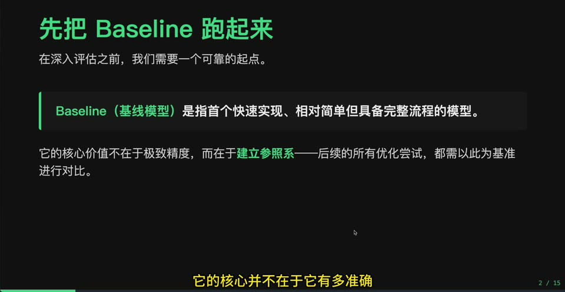
Baseline 是最简单的参照模型。只有先知道“什么都不聪明的模型”能做到什么水平,我们才知道复杂模型是否真的带来收益。
3. 加州房价数据集
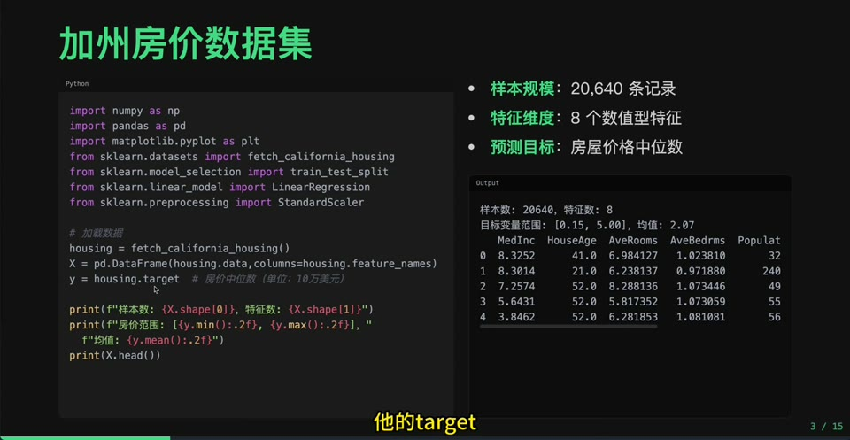
视频用加州房价作为回归任务。它适合作为机器学习实践的早期例子: 特征是数值型,目标是连续值,能自然引出误差指标。
4. 训练 Baseline 模型
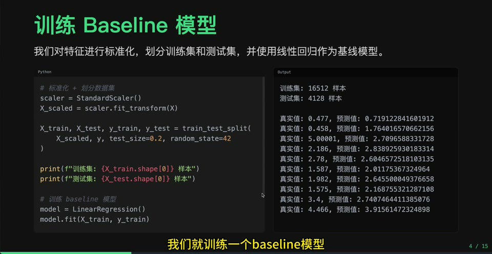
这里的重点不是模型多复杂,而是建立评估流程: 数据划分、训练、预测、计算指标。流程稳定后,后续模型替换才有意义。
5. MAE: 平均绝对误差
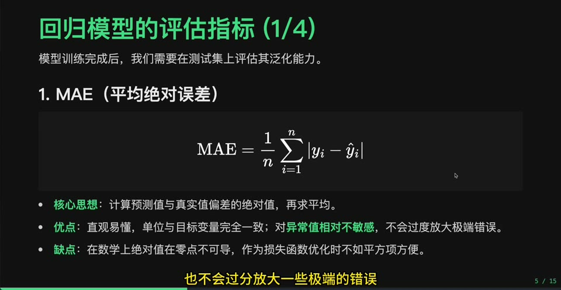
MAE 直接表示平均预测偏差,单位和目标值一致,比较容易解释。缺点是对大误差不够敏感。
6. MSE: 平方误差
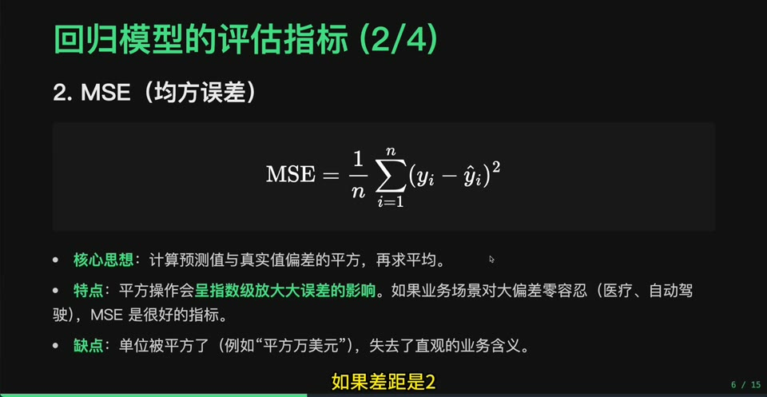
MSE 会放大大误差,因此适合惩罚严重预测偏差。但它的单位是平方后的单位,解释不如 MAE 直观。
7. RMSE: 把 MSE 拉回原单位
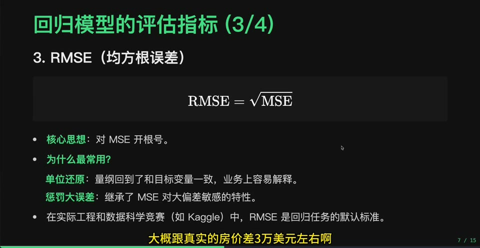
RMSE 是 MSE 开根号后的结果,既保留了对大误差敏感的特点,又回到目标变量的原始单位。
8. R2: 解释了多少波动
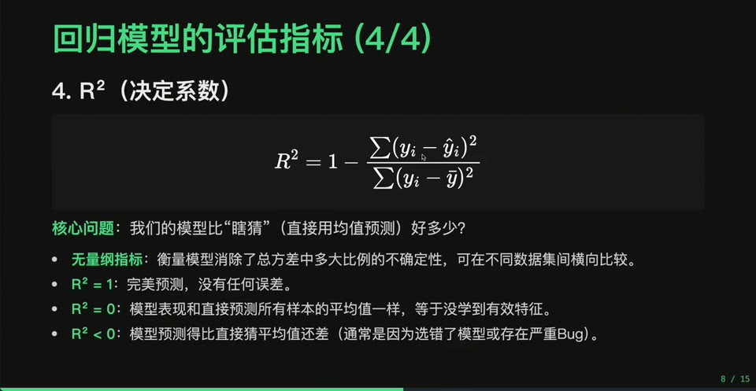
R2 试图回答: 模型相比“总是预测平均值”的基准,解释了多少目标变量变化。它适合做整体拟合效果判断。
9. Baseline 评估结果
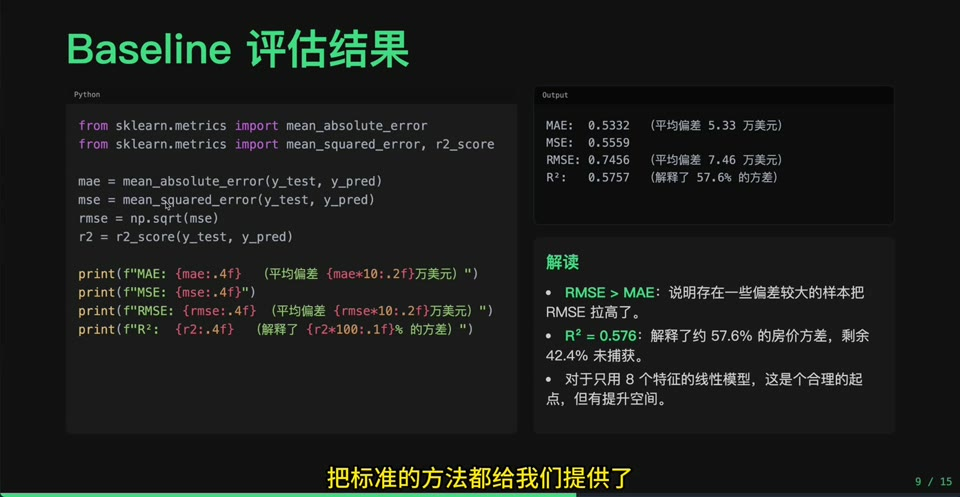
把多个指标放在一起看,比只盯一个数字更稳。MAE、RMSE、R2 分别从不同角度刻画模型表现。
10. 残差分析: 数字之外的诊断
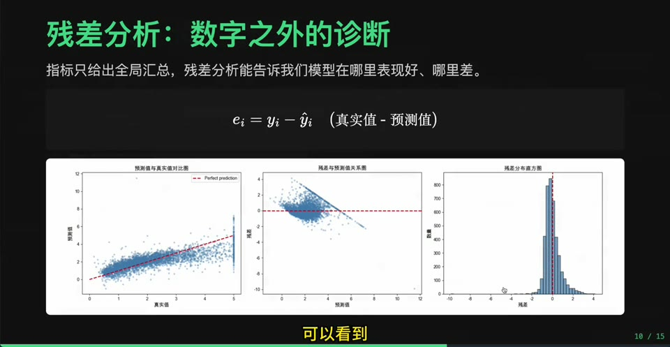
残差图能看出模型有没有系统性偏差。若残差随预测值呈明显结构,说明模型可能遗漏了非线性或关键特征。
11. 交叉验证: 减少一次划分的偶然性
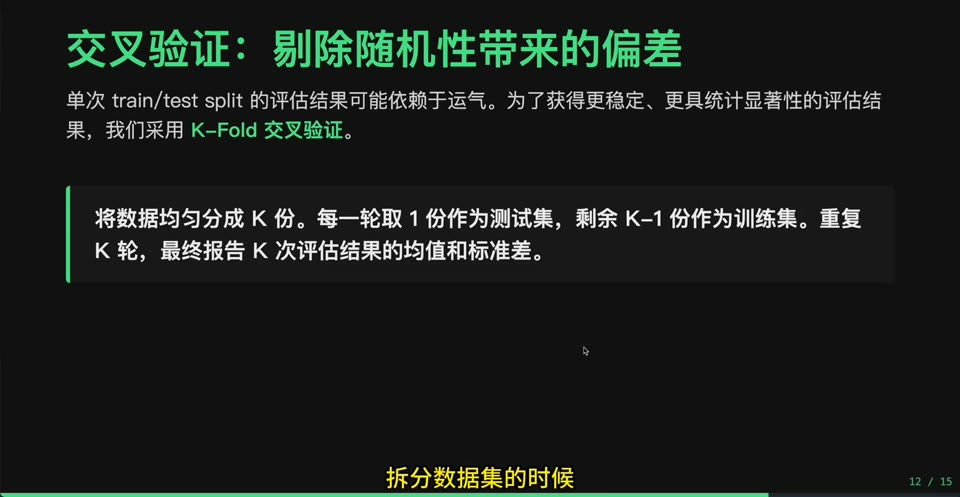
单次训练/测试切分可能碰巧容易或困难。交叉验证通过多次切分取平均,让评估更稳定。
12. K-Fold 交叉验证实战
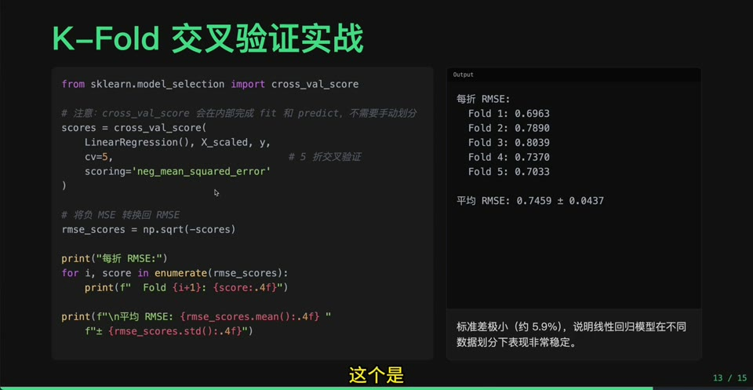
K-Fold 把数据分成 K 份,轮流用一份验证、其余训练。它适合样本量不大时更充分地利用数据。
13. 训练集 vs 测试集: 看泛化差距
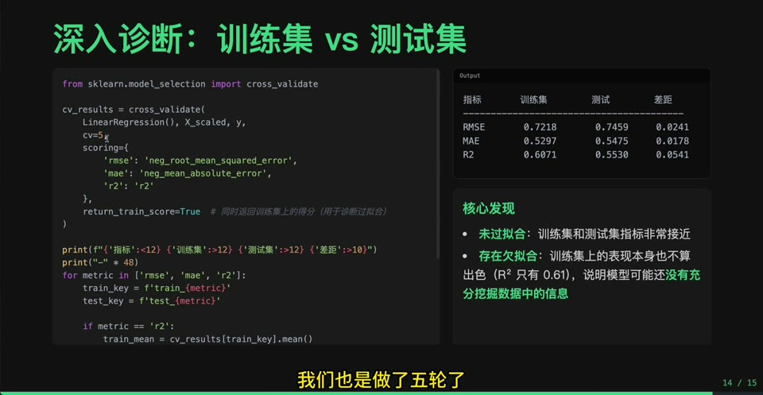
训练分数高、测试分数低,通常指向过拟合。训练和测试都差,更可能是欠拟合。这个诊断连接到下一集。
14. 下一步: 欠拟合与过拟合
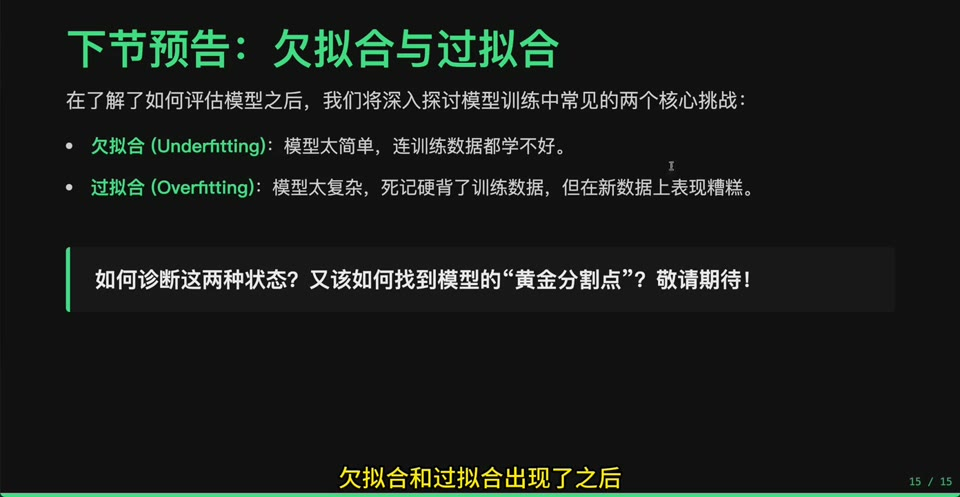
模型评估的价值在于指导行动: 指标差了,究竟该加复杂度、加数据、做正则化,还是换模型? 下一集正好展开。
入库建议
- 建议建立主节点
模型评估: 如何判断模型有没有学会。 - 回归指标建议按 MAE、MSE/RMSE、R2、残差分析、交叉验证展开。
- 正式知识库正文要特别强调: 训练集表现不等于泛化能力。